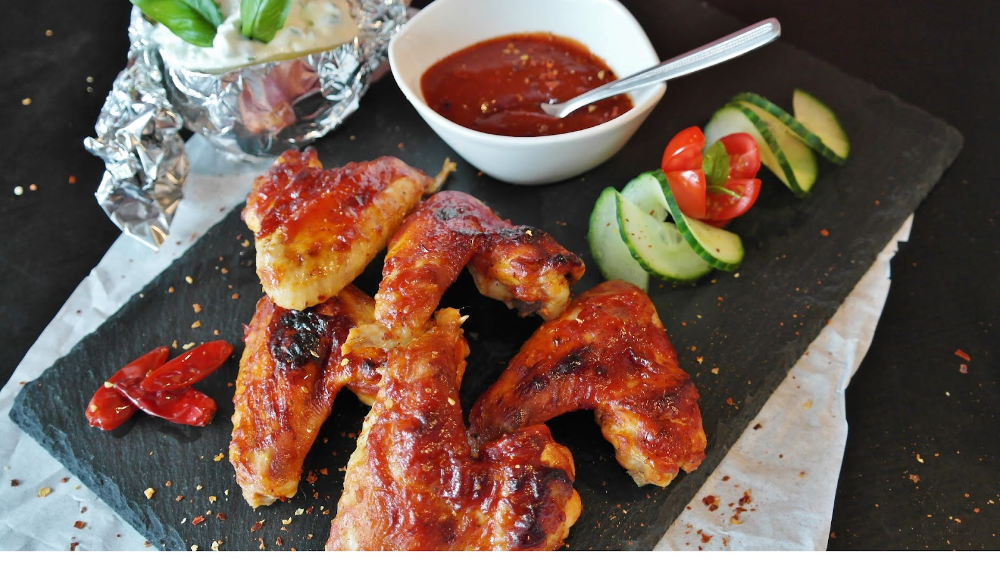

レシピ
バッファローウィング
調理時間： 約１時間
材料 (5人分)
つくり方
- 小麦粉、パプリカ、カイエンペッパー、塩を小さなボウルで混ぜ合わせる。
- ガラス製耐熱皿に、手羽元を一列に並べる。手羽先に小麦粉をまぶし、手羽先が均一になるまで混ぜる。蓋をして、冷蔵庫で1時間から1時間半ほど冷やす。
- 深めのフライパンに約1インチの油を入れ、190℃に熱する（油は手羽元が完全に隠れるくらいがよい）。
- オイルが温まっている間に、バター、ホットソース、こしょう、ガーリックパウダーを小鍋に入れて弱火にかける。バターが溶けるまで加熱し、よく混ぜる。火からおろし、冷ましておく。
- 熱した油で10～15分、手羽元をカリッと焼き色がつくまで揚げます。油の温度はそのままで。
- 手羽元を油から出し、ペーパータオルを敷いた皿に並べる。
- 手羽先をお皿に移し、ホットソースをかけます。盛り付ける。